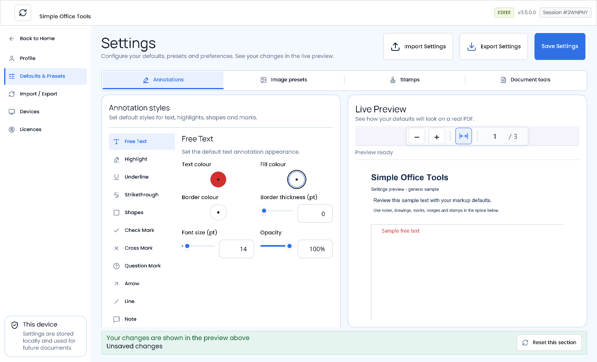
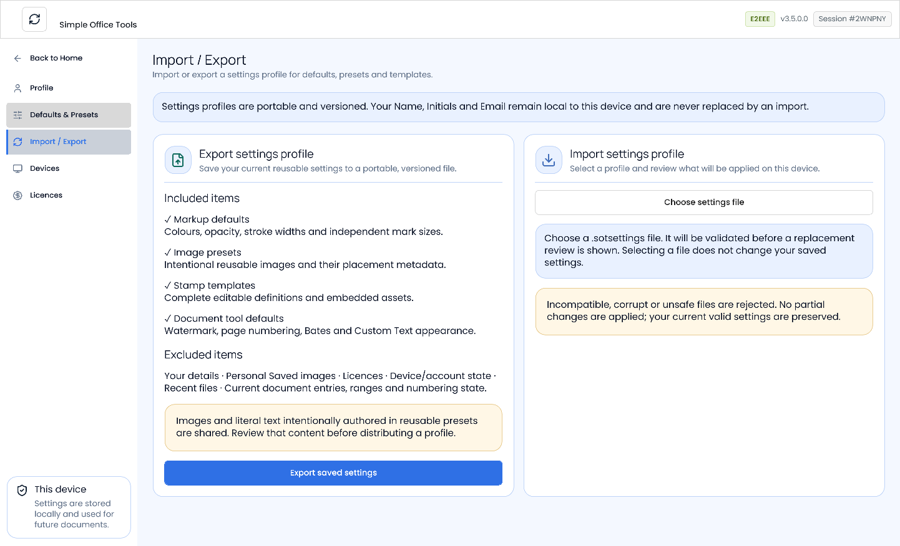

Set defaults and share a settings profile
Choose the starting appearance of new PDF annotations and document tools, then transfer reusable configuration to another device.
Save defaults with a real PDF preview
Open Settings
Use the Settings action in the app header, then choose Defaults & Presets.
The main navigation contains Profile, Defaults & Presets, Import / Export, Devices and Licences. Existing company and device information remains available in Devices and Licences.
Choose a tool or reusable preset
Use the Annotations, Image presets, Stamps and Document tools tabs. Choose a tool or reusable item in the left list; only its relevant controls appear. Annotations includes Free Text, Highlight, Underline, Strikethrough, Shapes, Check Mark, Cross Mark, Question Mark, Arrow, Line and Note. Freehand pen defaults remain available under Shapes. Document tools offers Page numbering, Bates numbering and a demonstration of the current Redaction appearance; Watermark and Custom Text remain available under Other saved defaults. Mark Size and Thickness are independent.
Colours accept hexadecimal values such as
#2563EB; opacity sliders show percentages, such as 75%. The value input also accepts a fraction such as 0.75. Watermark opacity uses a percentage. Sizes and placement offsets use PDF points.Add image presets with their original image bytes, dimensions, opacity, page anchor and offsets. Their dimensions retain their aspect ratio. Edit stamps with the existing stamp designer.
Preview before saving
The bundled three-page sample uses the real PDF viewer and your current draft values. Selecting a different demonstration starts at page one and Fit to width; use the shared zoom, fit and page controls to inspect it. Repeated annotation and document-tool appearance edits preserve your current page and zoom. The left list/editor scrolls while the same real Live Preview remains beside it; narrower windows stack these regions with scrolling. Changes appear immediately before saving. Image preset Name and Description are metadata: editing them marks unsaved changes and keeps the current PDF and zoom. Appearance or placement edits refresh the preview. Preview does not save. Invalid or incomplete input remains visible with inline guidance; it keeps the last valid draft value and blocks Save until corrected, including after switching tabs. For Marks, Thickness must be at most 45% of Size. Changing either field automatically clears the other's retained error when the pair becomes valid, without retyping it. Preview is separate from your documents, recent files and recovery history.
Document-tool defaults include Watermark appearance and text, Page numbering format and appearance, Bates prefix/padding/suffix and appearance, and Custom Text appearance. Page ranges, applied state, Bates sequence numbers and current Custom Text content belong to the document workflow.
Save changes
Choose the global Save Settings command to persist edited reusable defaults. New annotations and new workflows use them. Editing an annotation in a document does not change its saved default. You do not need to name a profile.
Reset this section resets only the current Annotations, Image presets, Stamps or Document tools draft. Removing a reusable library requires confirmation. Other sections stay unchanged, and the reset is persisted only when you choose Save Settings. Redaction currently has no portable default fields: its black-fill sample demonstrates the production appearance; document-specific redaction options stay in Customise.
Restore all defaults in Profile immediately saves the shipped defaults after you accept the confirmation, including removing reusable image presets and stamp templates. Wait for Defaults restored. New workflows use the restored defaults immediately and after restarting the app; you do not need to choose Save Settings. Your details, personal Saved images, licences and existing document content stay unchanged.
Keep your Profile details local
Open Profile, enter exactly Name, Initials and Email, then choose Save changes. Dynamic stamp fields use the receiving device's identity when a new stamp is placed. Existing stamp placements keep their original appearance.
Your details are never exported or replaced by import. Company information comes from company/licensing settings.
Export and import settings
Silent video · 29 seconds. Export reusable configuration to a settings file, choose that file for import, review the changes and apply them. Use fullscreen for a closer view. Export saved settings
In Import / Export, choose Export saved settings and save the
.sotsettingsfile. Export includes saved reusable configuration and required image/stamp assets. Save your draft first if you want to include recent changes.The general Saved images library, Your details, licences, device/account state and documents are excluded. Images and literal text deliberately authored in reusable presets are included: review those before sharing.
Validate and review on the receiving device
Choose Choose settings file and select the file. The complete package is validated before a replacement review appears. Selecting a file changes no saved configuration.
The review shows added, replaced and removed image presets and stamp templates, plus changes to markup and document-tool defaults. A matching identity is counted as replaced only when its reusable content changed; identical items are unchanged.
Apply or Discard
Apply settings replaces all supported reusable profile configuration. Presets or templates absent from the incoming snapshot are removed. Export a backup first if you want to retain the receiving device's reusable configuration.
If your saved settings changed after the review, including through Save, Restore defaults or a reusable library change, the first Apply leaves them unchanged and shows an updated review. Read the new counts and default changes, then choose Apply settings again to confirm, or Discard to keep your current saved settings.
Discard leaves saved settings unchanged. Invalid, damaged or unsupported files cannot partially apply. Local identity, Saved images, licences and account/device state survive either choice.


If a profile cannot be imported
Follow the displayed guidance. A newer profile version requires a compatible app. Damaged or changed assets need a fresh export. Duplicate names, unsupported images or invalid placement values must be corrected before export. Large packages may need smaller images or fewer templates.
Profiles support up to 128 image presets and 128 stamp templates. The file is limited to 64 MiB, with 96 MiB of expanded content. Individual preset images are PNG, JPEG or BMP and limited to 10 MiB, 10,000 pixels per dimension and 16,777,216 pixels in total. Stamp images follow the existing stamp designer's validation.
Common questions
Does import replace my reusable presets?
Yes. Apply uses the complete incoming snapshot; export a backup before replacing your current reusable configuration.
Will my identity or Saved images change?
No. Your details, Saved images, licences and device/account state remain on the receiving device.